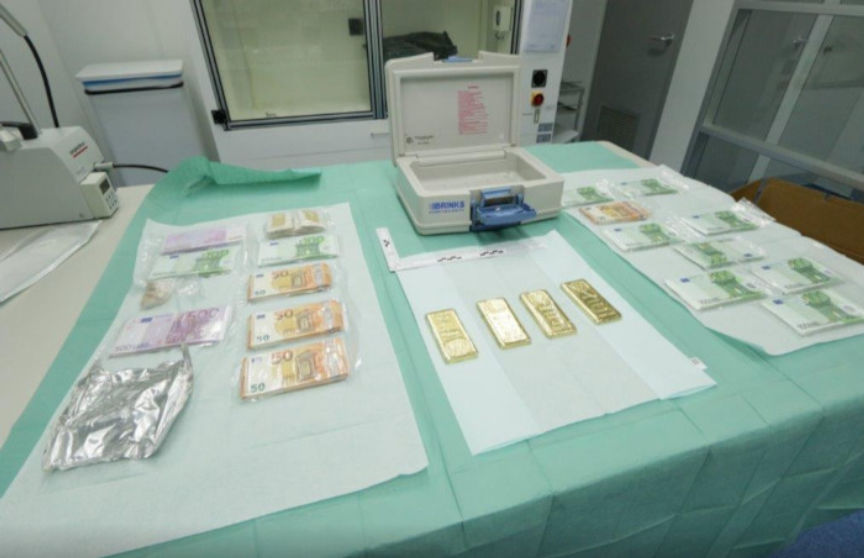
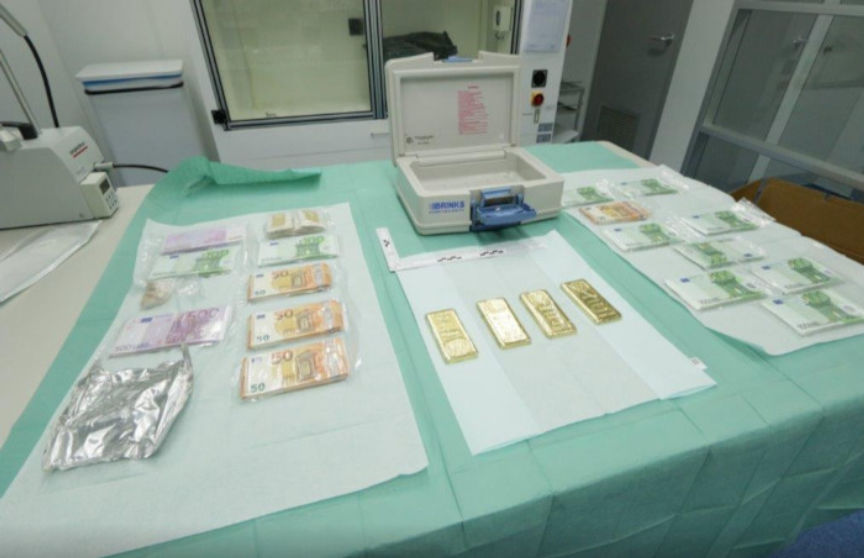

Dutch Police Bust a Package Shipper for Dutchmagic
~2 min read | Published on 2019-05-11, tagged Arrested, Darkweb-Vendor using 384 words.
According to an announcement from Dutch law enforcement, police raided and arrested an individual suspected shipping drugs and laundering money in connection with the prolific darkweb vendor DutchMagic.
Dutch law enforcement announced they had identified the operators of the DutchMagic vendor shop in the aftermath of Operation Hyperion in 2016. They uploaded a seizure banner with a list of the vendors Dutch law enforcement had arrested and the vendors they had identified.
DutchMagic was one of several vendors law enforcement had identified but not yet arrested. The suspect, a 42-year-old man from Hoensbroek, was originally raided in 2018 and then again earlier this year. They finally arrested him in April 2019.

The Dutch National Police Press Release
Original (Politie.nl)
Visitors could purchase soft drugs at DutchMagic. For years, the website was considered one of the top vendors (sellers) on the so-called dark web, with annual sales of millions. The drugs were ordered via darkweb, settled in bitcoins and sent via regular mail and package companies.Intervention
Already in November 2018, the police ordered DutchMagic to be offline by order of a public prosecutor. At an earlier stage, research was done into the packer and shipper of the orders. In addition, seized vehicles and two buildings. Searches were carried out again at the beginning of April this year, and again seized on vehicles and buildings, but also on data carriers. In addition, almost half a million contacts and gold bars were found during the searches. This has also been seized.Suspect
A 42-year-old man from Hoensbroek was arrested on 8 April 2019. The council chamber of the court in Zwolle has since decided that the man will be detained until at least July 23. He is suspected of sending packages of drugs abroad and also of money laundering. The investigation is still ongoing and more arrests are planned.Darkweb
On the darkweb markets, illegal goods such as drugs, weapons, child pornography and hostage software are traded on a large scale. An example is Hansamarket, which was taken offline after a major infiltration operation in 2017. More recently is WallStreetMarket, where government agencies have also worked together to tackle crime on the dark web. The so-called darkweb is the part of the internet that cannot be found immediately.
Dutch law enforcement announced they had identified the operators of the DutchMagic vendor shop in the aftermath of Operation Hyperion in 2016. They uploaded a seizure banner with a list of the vendors Dutch law enforcement had arrested and the vendors they had identified.
A Picture of Seized Items | Credit: nu.nl
DutchMagic was one of several vendors law enforcement had identified but not yet arrested. The suspect, a 42-year-old man from Hoensbroek, was originally raided in 2018 and then again earlier this year. They finally arrested him in April 2019.
Warning to Darkweb Market Users from Dutch Law Enforcement
The Dutch National Police Press Release
Original (Politie.nl)
Visitors could purchase soft drugs at DutchMagic. For years, the website was considered one of the top vendors (sellers) on the so-called dark web, with annual sales of millions. The drugs were ordered via darkweb, settled in bitcoins and sent via regular mail and package companies.Intervention
Already in November 2018, the police ordered DutchMagic to be offline by order of a public prosecutor. At an earlier stage, research was done into the packer and shipper of the orders. In addition, seized vehicles and two buildings. Searches were carried out again at the beginning of April this year, and again seized on vehicles and buildings, but also on data carriers. In addition, almost half a million contacts and gold bars were found during the searches. This has also been seized.Suspect
A 42-year-old man from Hoensbroek was arrested on 8 April 2019. The council chamber of the court in Zwolle has since decided that the man will be detained until at least July 23. He is suspected of sending packages of drugs abroad and also of money laundering. The investigation is still ongoing and more arrests are planned.Darkweb
On the darkweb markets, illegal goods such as drugs, weapons, child pornography and hostage software are traded on a large scale. An example is Hansamarket, which was taken offline after a major infiltration operation in 2017. More recently is WallStreetMarket, where government agencies have also worked together to tackle crime on the dark web. The so-called darkweb is the part of the internet that cannot be found immediately.